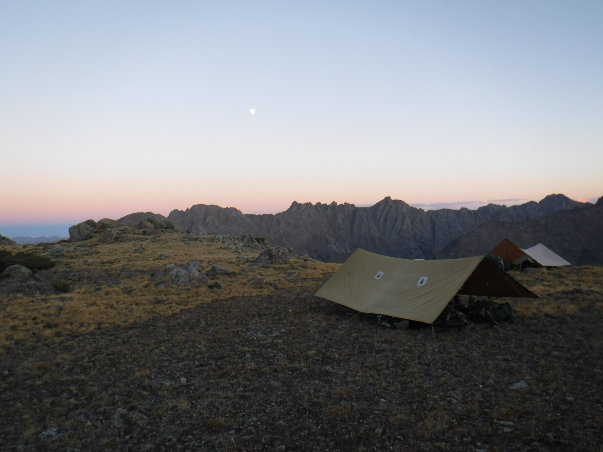
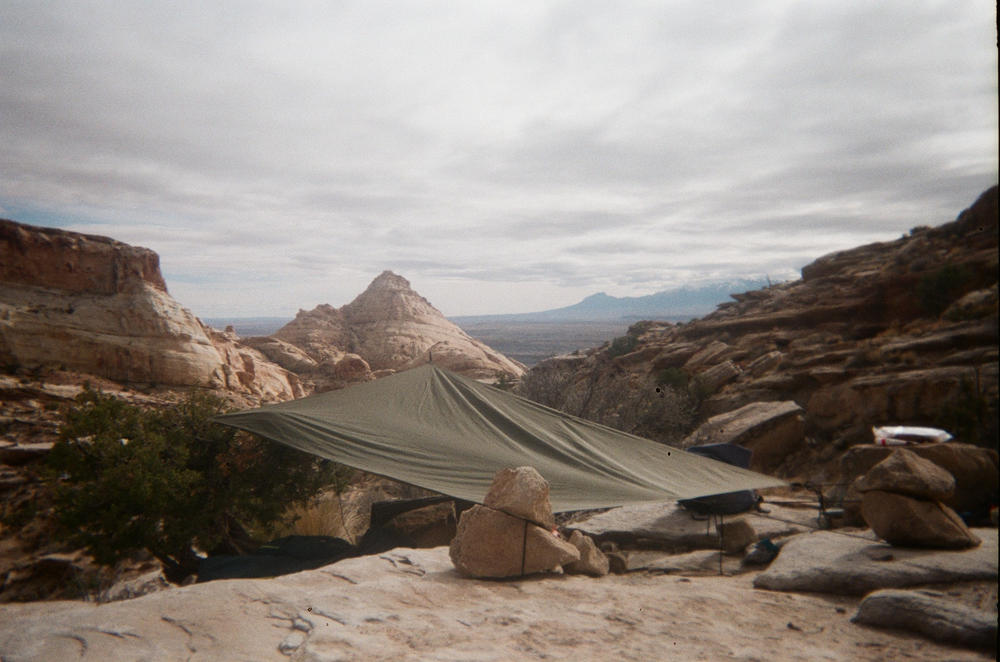

I spent 18 days in the wilderness of the Gore Range,
with a rendevous halfway
through for more food. This is me sitting on an alpine
plateau, about 7000 feet
above sea level. I was able to
see some pretty incredible things.
I had heard of a organization called
Outward Bound and after talking with
my parents, I decided to take a Semester course
and gain outdoor experience.
First Stop, Colorado
I spent 18 days in the wilderness of the Gore Range,
with a rendevous halfway
through for more food. This is me sitting on an alpine
plateau, about 7000 feet
above sea level. I was able to
see some pretty incredible things.

After some time in Colorado, I went to the San Rafael Swell in Utah.

Here, I spent three days in isolation in the bowl of a canyon.
After 21 days in Utah,
we headed to Joshua Tree, California!


I finished this journey by attempting
to climb Antisana, and Cotopaxi, two
glaciated Volcanoes. This adventure was the
experience I needed
before returning to school.